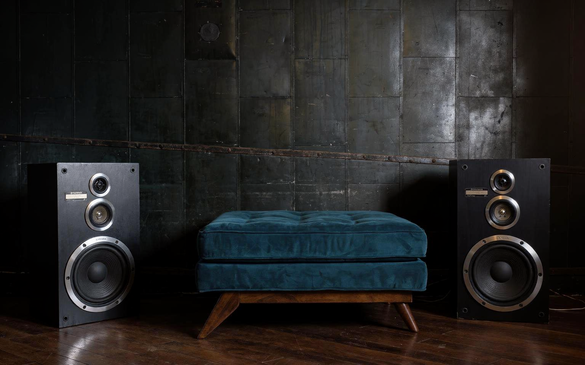

Pioneer S-Z85D Speaker Pair
Stereo speaker pair · Sound & Music
← Back to collectionTwo separate cabinets considered together as a stereo listening pair.
The Pioneer S-Z85D speakers are presented as a stereo pair. Pioneer traces its loudspeaker history to the A-8 dynamic speaker developed by founder Nozomu Matsumoto in 1937, the beginning of the company’s long relationship with sound reproduction. The S-Z85D pair’s dark cabinets and visible driver arrangement emphasise the balanced sense of space created by two physical stereo sources.